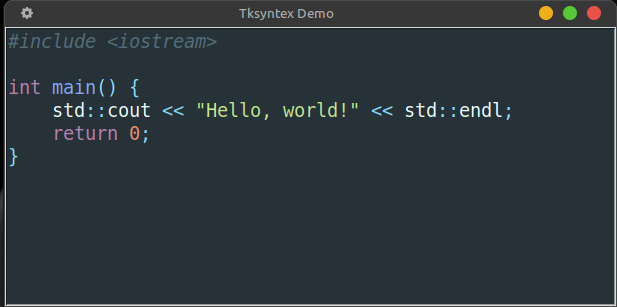

Tksyntex provides real‑time syntax highlighting for tkinter.Text widgets. It reuses lexers and color schemes from the Pygments library, giving you access to many languages and beautiful themes out of the box.
pip install pygments
No other dependencies are required (the module itself is just one file, Tksyntex.py).
from Tksyntex import SyntaxHighlighter
# ... after creating your tkinter Text widget ...
self.highlighter = SyntaxHighlighter(
text_widget=tktext,
language="cpp",
style_name="default",
debounce_ms=200 # milliseconds to wait before rehighlighting while typing
)
If you want to highlight a file whose language you know:
# Map file extensions to Pygments lexer names
extension_to_lexer = {
".py": "python",
".js": "javascript",
".c": "cpp",
".java": "java",
".html": "html",
".css": "css",
".go": "go",
".rs": "rust",
".sh": "bash",
".json": "json",
".sql": "sql",
".md": "markdown",
".ini": "ini",
".h": "cpp",
}
# Then, based on your file's extension:
self.highlighter.set_language(lang)
For plain text or when you don’t want any highlighting, simply skip the set_language call, or use "text" for language.
Important: This module is not a full text editor. It does not handle line numbers, auto‑indentation, or any other editor features. It only provides syntax highlighting on top of a standard tkinter
Textwidget.
Here’s a self‑contained script that opens a tkinter window with a Text widget and highlights a small C++ code snippet:
import tkinter as tk
from Tksyntex import SyntaxHighlighter
if __name__ == "__main__":
root = tk.Tk()
root.title("Tksyntex Demo")
# Create a Text widget
text = tk.Text(root, wrap="none")
text.pack(fill="both", expand=True)
# Insert some C++ code
code = '''#include <iostream>
int main() {
std::cout << "Hello, world!" << std::endl;
return 0;
}
'''
text.insert("1.0", code)
# Create the highlighter (debounce only matters during live editing)
highlighter = SyntaxHighlighter(
text_widget=text,
language="cpp",
font_name="consolas",
font_size=14,
style_name="material", # monokai for dark, default for light
debounce_ms=100
)
highlighter.highlight() # "text" for no highlighting
root.mainloop()
This will display the code with syntax highlighting as soon as the window appears.
SyntaxHighlighter uses Pygments to parse the widget’s content and apply the correct tags (colours, fonts) to code tokens.highlight method is called (highlighter.highlight())style_name parameter accepts any Pygments style name (e.g., "monokai", "colorful", "native").highlighter.set_language method.